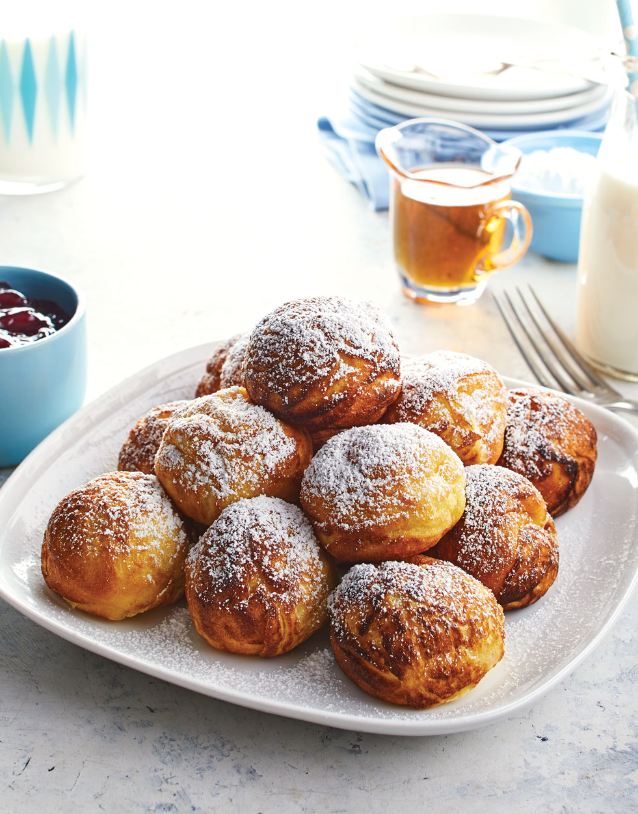

Aebleskiver

Description
Aebleskiver is a Danish dessert, like doughnut holes, but sweeter and much better. It's traditionally
served with glogg during the Advent and cooked in a cast iron pan that resembles an egg poacher. Serve
hot with syrup, jam, or powdered sugar.
Ingredients
- 2 large egg whites
- 2 cups buttermilk
- 2 cups all-purpose flour
- 2 large egg yolks
- 4 tablespoons butter, melted
- 1 tablespoon white sugar
- 2 teaspoons baking powder
- ½ teaspoon baking soda
- ½ teaspoon salt
- 1 cup vegetable oil for frying
Steps
- Beat egg whites in a clean glass or metal bowl with an electric mixer on high speed until stiff
peaks form. Set aside.
- Mix together buttermilk, flour, egg yolks, melted butter, sugar, baking powder, baking soda, and
salt in a large bowl; beat until smooth. Gently fold in egg whites.
- Heat an aebleskiver pan over medium heat. Put about 1 tablespoon vegetable oil in the bottom
of each cup.
- Pour about 2 tablespoons batter into each prepared cup. As soon as bubbles appear around the edges,
turn them quickly. (Danish cooks use a long knitting needle, but a fork will work.) Continue cooking,
turning the ball to keep it from burning.